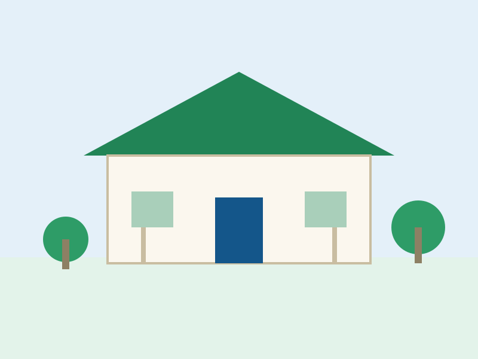

Portal Resmi Pemerintah Desa
Selamat Datang di Desa Fataatu Timur
Kecamatan Wewaria, Kabupaten Ende, Nusa Tenggara Timur. Temukan informasi pemerintahan, layanan publik, potensi, berita, dan kegiatan desa.
0
Jumlah Penduduk
0
Kepala Keluarga
0
Jumlah Dusun
8
Aparatur Desa
Data statistik masih menggunakan nilai awal/placeholder dari database sumber.

Sumber Daya
Potensi & Hasil Bumi Desa
Komoditas unggulan pertanian dan perkebunan masyarakat.
Jagung
Pertanian
Padi
Pertanian
Ubi Kayu / Ubi Jalar
Pertanian
Sayur-sayuran
Pertanian
Kelapa
Perkebunan
Kakao
Perkebunan
Informasi